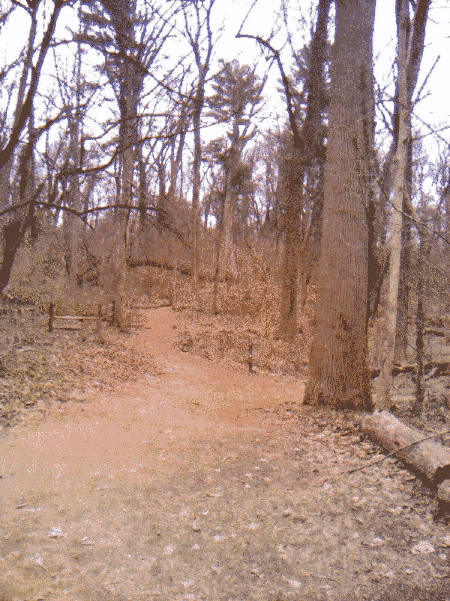

Last updated: Sun Feb 11 2024 | Permalink | RSS
A dithered photo of a wooded trail going off into the trees
After a few weeks working at my new job and settling into new habits, there's a part of me that feels like I'm waking up from something. I really did not enjoy my last job. While I knew it was temporary, I still resented the forty hours a week spent working with no benefits on a project that I found equally interesting and frustrating to work on.
My therapist mentioned back in December that I had been stressed about work for about a year at that point since it had just been announced that Azavea would be acquired while I was going through a performance improvement plan. And for the months leading up to and following the acquisition felt like shaky ground before being laid off in May.
Happily, after taking a few weeks off before starting at CLS, and with two weeks of learning new tools, legal terms, and company culture, I have really felt myself standing up straighter. I have felt like I am more aware of my surroundings. I have felt like that feeling where I suddenly come into focus and realize I have been staring into space for a while.
I remarked to Ruby a few weeks ago that I was feeling a low-level anxiety that was a similar feeling to waking up from a nightmare. That feeling where you know you're safe, but are still feeling scared and processing what it was you just went through. My last job was far from a nightmare, but I really wanted to be in a values-based space and really have been enjoying having that again.
I've also been biking more including mountain biking and that feels wonderful! My friend, Pat, convinced me to sign up for Grinduro PA this coming June. It's a 70-mile gravel ride through Central PA and I have not done any ride that long in over four years, let alone on unpaved roads. I said yes, first because I love riding with Pat, but also I have been wanting to get back into good riding shape and this essentially puts a deadline on that. Note: "In shape" is incredibly relative and for me it's the ability to spontaneously be able to do a 60+ mile ride (if my schedule allows) when a friend asks me.
Getting back out on my mountain bike feels great and I am happy to be spending more time in the woods. A few days ago was my first ride since probably last July or August. While I felt shaky that first ride, a few days in I am starting to feel more confident again and able to get past some of the tricky obstacles I learned to navigate last year.
Between my new job, co-directing Code for Philly, organizing a hackathon and a renewed cycling habit, I am feeling great both inside and out and hopefully I'm setting a sustainable pace for myself. Because I genuinely love how this is feeling.
Thank you for reading! Please consider supporting this blog.